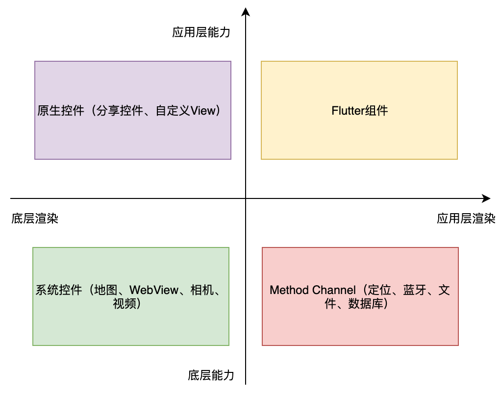
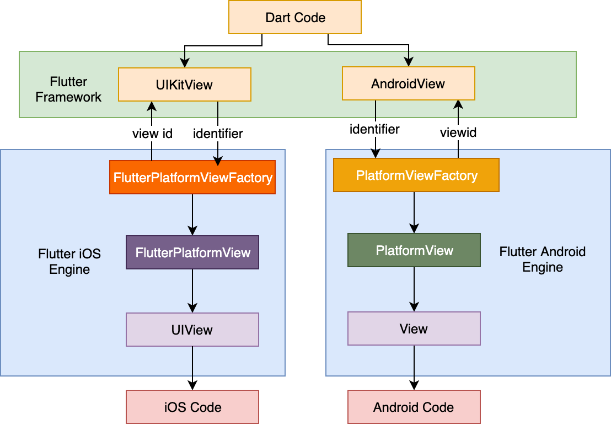
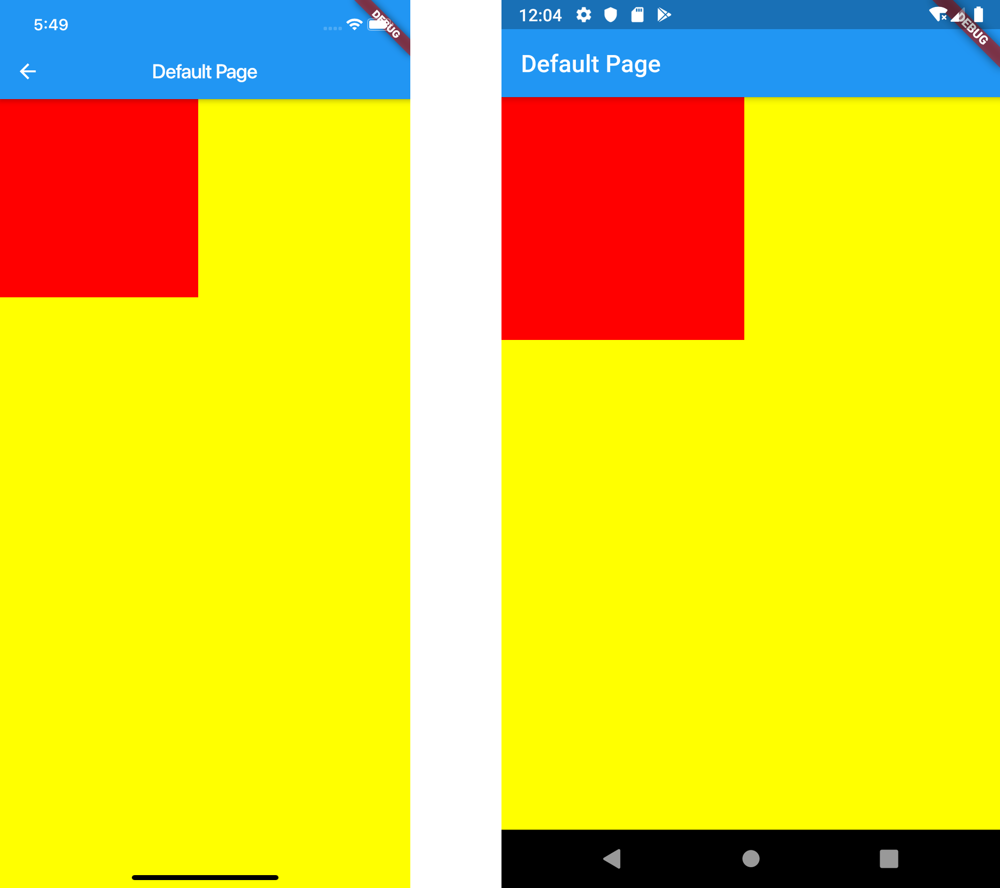
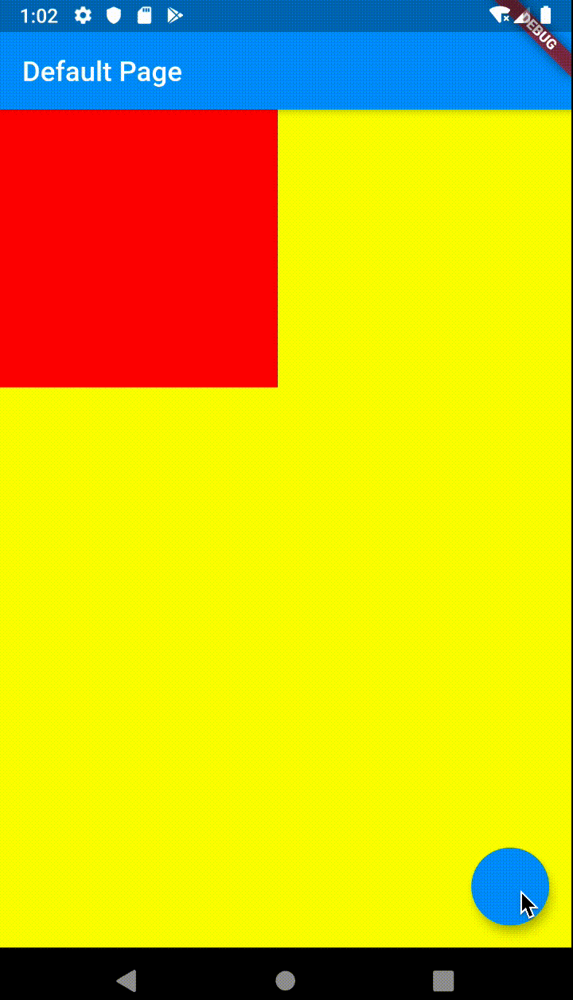

你好，我是陈航。
在上一篇文章中，我与你介绍了方法通道，这种在 Flutter 中实现调用原生 Android、iOS 代码的轻量级解决方案。使用方法通道，我们可以把原生代码所拥有的能力，以接口形式提供给 Dart。
这样，当发起方法调用时，Flutter 应用会以类似网络异步调用的方式，将请求数据通过一个唯一标识符指定的方法通道传输至原生代码宿主；而原生代码处理完毕后，会将响应结果通过方法通道回传至 Flutter，从而实现 Dart 代码与原生 Android、iOS 代码的交互。这，与调用一个本地的 Dart 异步 API 并无太多区别。
通过方法通道，我们可以把原生操作系统提供的底层能力，以及现有原生开发中一些相对成熟的解决方案，以接口封装的形式在 Dart 层快速搞定，从而解决原生代码在 Flutter 上的复用问题。然后，我们可以利用 Flutter 本身提供的丰富控件，做好 UI 渲染。
底层能力 + 应用层渲染，看似我们已经搞定了搭建一个复杂 App 的所有内容。但，真的是这样吗？
构建一个复杂 App 都需要什么？
别急，在下结论之前，我们先按照四象限分析法，把能力和渲染分解成四个维度，分析构建一个复杂 App 都需要什么。

经过分析，我们终于发现，原来构建一个 App 需要覆盖那么多的知识点，通过 Flutter 和方法通道只能搞定应用层渲染、应用层能力和底层能力，对于那些涉及到底层渲染，比如浏览器、相机、地图，以及原生自定义视图的场景，自己在 Flutter 上重新开发一套显然不太现实。
在这种情况下，使用混合视图看起来是一个不错的选择。我们可以在 Flutter 的 Widget 树中提前预留一块空白区域，在 Flutter 的画板中（即 FlutterView 与 FlutterViewController）嵌入一个与空白区域完全匹配的原生视图，就可以实现想要的视觉效果了。
但是，采用这种方案极其不优雅，因为嵌入的原生视图并不在 Flutter 的渲染层级中，需要同时在 Flutter 侧与原生侧做大量的适配工作，才能实现正常的用户交互体验。
幸运的是，Flutter 提供了一个平台视图（Platform View）的概念。它提供了一种方法，允许开发者在 Flutter 里面嵌入原生系统（Android 和 iOS）的视图，并加入到 Flutter 的渲染树中，实现与 Flutter 一致的交互体验。
这样一来，通过平台视图，我们就可以将一个原生控件包装成 Flutter 控件，嵌入到 Flutter 页面中，就像使用一个普通的 Widget 一样。
接下来，我就与你详细讲述如何使用平台视图。
平台视图
如果说方法通道解决的是原生能力逻辑复用问题，那么平台视图解决的就是原生视图复用问题。Flutter 提供了一种轻量级的方法，让我们可以创建原生（Android 和 iOS）的视图，通过一些简单的 Dart 层接口封装之后，就可以将它插入 Widget 树中，实现原生视图与 Flutter 视图的混用。
一次典型的平台视图使用过程与方法通道类似：
- 首先，由作为客户端的 Flutter，通过向原生视图的 Flutter 封装类（在 iOS 和 Android 平台分别是 UIKitView 和 AndroidView）传入视图标识符，用于发起原生视图的创建请求；
- 然后，原生代码侧将对应原生视图的创建交给平台视图工厂（PlatformViewFactory）实现；
- 最后，在原生代码侧将视图标识符与平台视图工厂进行关联注册，让 Flutter 发起的视图创建请求可以直接找到对应的视图创建工厂。
至此，我们就可以像使用 Widget 那样，使用原生视图了。整个流程，如下图所示：

接下来，我以一个具体的案例，也就是将一个红色的原生视图内嵌到 Flutter 中，与你演示如何使用平台视图。这部分内容主要包括两部分：
- 作为调用发起方的 Flutter，如何实现原生视图的接口调用？
- 如何在原生（Android 和 iOS）系统实现接口？
接下来，我将分别与你讲述这两个问题。
Flutter 如何实现原生视图的接口调用？
在下面的代码中，我们在 SampleView 的内部，分别使用了原生 Android、iOS 视图的封装类 AndroidView 和 UIkitView，并传入了一个唯一标识符，用于和原生视图建立关联：
class SampleView extends StatelessWidget { @override Widget build(BuildContext context) { // 使用 Android 平台的 AndroidView，传入唯一标识符 sampleView if (defaultTargetPlatform == TargetPlatform.android) { return AndroidView(viewType: 'sampleView'); } else { // 使用 iOS 平台的 UIKitView，传入唯一标识符 sampleView return UiKitView(viewType: 'sampleView'); } }}可以看到，平台视图在 Flutter 侧的使用方式比较简单，与普通 Widget 并无明显区别。而关于普通 Widget 的使用方式，你可以参考第12、13篇的相关内容进行复习。
调用方的实现搞定了。接下来，我们需要在原生代码中完成视图创建的封装，建立相关的绑定关系。同样的，由于需要同时适配 Android 和 iOS 平台，我们需要分别在两个系统上完成对应的接口实现。
如何在原生系统实现接口？
首先，我们来看看Android 端的实现。在下面的代码中，我们分别创建了平台视图工厂和原生视图封装类，并通过视图工厂的 create 方法，将它们关联起来：
// 视图工厂类class SampleViewFactory extends PlatformViewFactory { private final BinaryMessenger messenger; // 初始化方法 public SampleViewFactory(BinaryMessenger msger) { super(StandardMessageCodec.INSTANCE); messenger = msger; } // 创建原生视图封装类，完成关联 @Override public PlatformView create(Context context, int id, Object obj) { return new SimpleViewControl(context, id, messenger); }}// 原生视图封装类class SimpleViewControl implements PlatformView { private final View view;// 缓存原生视图 // 初始化方法，提前创建好视图 public SimpleViewControl(Context context, int id, BinaryMessenger messenger) { view = new View(context); view.setBackgroundColor(Color.rgb(255, 0, 0)); } // 返回原生视图 @Override public View getView() { return view; } // 原生视图销毁回调 @Override public void dispose() { }}将原生视图封装类与原生视图工厂完成关联后，接下来就需要将 Flutter 侧的调用与视图工厂绑定起来了。与上一篇文章讲述的方法通道类似，我们仍然需要在 MainActivity 中进行绑定操作：
protected void onCreate(Bundle savedInstanceState) { ... Registrar registrar = registrarFor("samples.chenhang/native_views");// 生成注册类 SampleViewFactory playerViewFactory = new SampleViewFactory(registrar.messenger());// 生成视图工厂 registrar.platformViewRegistry().registerViewFactory("sampleView", playerViewFactory);// 注册视图工厂}完成绑定之后，平台视图调用响应的 Android 部分就搞定了。
接下来，我们再来看看iOS 端的实现。
与 Android 类似，我们同样需要分别创建平台视图工厂和原生视图封装类，并通过视图工厂的 create 方法，将它们关联起来：
// 平台视图工厂@interface SampleViewFactory : NSObject<FlutterPlatformViewFactory>- (instancetype)initWithMessenger:(NSObject<FlutterBinaryMessenger>*)messager;@end @implementation SampleViewFactory{ NSObject<FlutterBinaryMessenger>*_messenger;} - (instancetype)initWithMessenger:(NSObject<FlutterBinaryMessenger> *)messager{ self = [super init]; if (self) { _messenger = messager; } return self;} -(NSObject<FlutterMessageCodec> *)createArgsCodec{ return [FlutterStandardMessageCodec sharedInstance];} // 创建原生视图封装实例-(NSObject<FlutterPlatformView> *)createWithFrame:(CGRect)frame viewIdentifier:(int64_t)viewId arguments:(id)args{ SampleViewControl *activity = [[SampleViewControl alloc] initWithWithFrame:frame viewIdentifier:viewId arguments:args binaryMessenger:_messenger]; return activity;}@end // 平台视图封装类@interface SampleViewControl : NSObject<FlutterPlatformView>- (instancetype)initWithWithFrame:(CGRect)frame viewIdentifier:(int64_t)viewId arguments:(id _Nullable)args binaryMessenger:(NSObject<FlutterBinaryMessenger>*)messenger;@end @implementation SampleViewControl{ UIView * _templcateView;}// 创建原生视图- (instancetype)initWithWithFrame:(CGRect)frame viewIdentifier:(int64_t)viewId arguments:(id)args binaryMessenger:(NSObject<FlutterBinaryMessenger> *)messenger{ if ([super init]) { _templcateView = [[UIView alloc] init]; _templcateView.backgroundColor = [UIColor redColor]; } return self;} -(UIView *)view{ return _templcateView;} @end然后，我们同样需要把原生视图的创建与 Flutter 侧的调用关联起来，才可以在 Flutter 侧找到原生视图的实现：
- (BOOL)application:(UIApplication *)application didFinishLaunchingWithOptions:(NSDictionary *)launchOptions { NSObject<FlutterPluginRegistrar>* registrar = [self registrarForPlugin:@"samples.chenhang/native_views"];// 生成注册类 SampleViewFactory* viewFactory = [[SampleViewFactory alloc] initWithMessenger:registrar.messenger];// 生成视图工厂 [registrar registerViewFactory:viewFactory withId:@"sampleView"];// 注册视图工厂 ...}需要注意的是，在 iOS 平台上，Flutter 内嵌 UIKitView 目前还处于技术预览状态，因此我们还需要在 Info.plist 文件中增加一项配置，把内嵌原生视图的功能开关设置为 true，才能打开这个隐藏功能：
<dict> ... <key>io.flutter.embedded_views_preview</key> <true/> ....</dict>经过上面的封装与绑定，Android 端与 iOS 端的平台视图功能都已经实现了。接下来，我们就可以在 Flutter 应用里，像使用普通 Widget 一样，去内嵌原生视图了：
Scaffold( backgroundColor: Colors.yellowAccent, body: Container(width: 200, height:200, child: SampleView(controller: controller) ));如下所示，我们分别在 iOS 和 Android 平台的 Flutter 应用上，内嵌了一个红色的原生视图：

在上面的例子中，我们将原生视图封装在一个 StatelessWidget 中，可以有效应对静态展示的场景。如果我们需要在程序运行时动态调整原生视图的样式，又该如何处理呢？
如何在程序运行时，动态地调整原生视图的样式？
与基于声明式的 Flutter Widget，每次变化只能以数据驱动其视图销毁重建不同，原生视图是基于命令式的，可以精确地控制视图展示样式。因此，我们可以在原生视图的封装类中，将其持有的修改视图实例相关的接口，以方法通道的方式暴露给 Flutter，让 Flutter 也可以拥有动态调整视图视觉样式的能力。
接下来，我以一个具体的案例来演示如何在程序运行时动态调整内嵌原生视图的背景颜色。
在这个案例中，我们会用到原生视图的一个初始化属性，即 onPlatformViewCreated：原生视图会在其创建完成后，以回调的形式通知视图 id，因此我们可以在这个时候注册方法通道，让后续的视图修改请求通过这条通道传递给原生视图。
由于我们在底层直接持有了原生视图的实例，因此理论上可以直接在这个原生视图的 Flutter 封装类上提供视图修改方法，而不管它到底是 StatelessWidget 还是 StatefulWidget。但为了遵照 Flutter 的 Widget 设计理念，我们还是决定将视图展示与视图控制分离，即：将原生视图封装为一个 StatefulWidget 专门用于展示，通过其 controller 初始化参数，在运行期修改原生视图的展示效果。如下所示：
// 原生视图控制器class NativeViewController { MethodChannel _channel; // 原生视图完成创建后，通过 id 生成唯一方法通道 onCreate(int id) { _channel = MethodChannel('samples.chenhang/native_views_$id'); } // 调用原生视图方法，改变背景颜色 Future<void> changeBackgroundColor() async { return _channel.invokeMethod('changeBackgroundColor'); }} // 原生视图 Flutter 侧封装，继承自 StatefulWidgetclass SampleView extends StatefulWidget { const SampleView({ Key key, this.controller, }) : super(key: key); // 持有视图控制器 final NativeViewController controller; @override State<StatefulWidget> createState() => _SampleViewState();} class _SampleViewState extends State<SampleView> { // 根据平台确定返回何种平台视图 @override Widget build(BuildContext context) { if (defaultTargetPlatform == TargetPlatform.android) { return AndroidView( viewType: 'sampleView', // 原生视图创建完成后，通过 onPlatformViewCreated 产生回调 onPlatformViewCreated: _onPlatformViewCreated, ); } else { return UiKitView(viewType: 'sampleView', // 原生视图创建完成后，通过 onPlatformViewCreated 产生回调 onPlatformViewCreated: _onPlatformViewCreated ); } } // 原生视图创建完成后，调用 control 的 onCreate 方法，传入 view id _onPlatformViewCreated(int id) { if (widget.controller == null) { return; } widget.controller.onCreate(id); }}Flutter 的调用方实现搞定了，接下来我们分别看看 Android 和 iOS 端的实现。
程序的整体结构与之前并无不同，只是在进行原生视图初始化时，我们需要完成方法通道的注册和相关事件的处理；在响应方法调用消息时，我们需要判断方法名，如果完全匹配，则修改视图背景，否则返回异常。
Android 端接口实现代码如下所示：
class SimpleViewControl implements PlatformView, MethodCallHandler { private final MethodChannel methodChannel; ... public SimpleViewControl(Context context, int id, BinaryMessenger messenger) { ... // 用 view id 注册方法通道 methodChannel = new MethodChannel(messenger, "samples.chenhang/native_views_" + id); // 设置方法通道回调 methodChannel.setMethodCallHandler(this); } // 处理方法调用消息 @Override public void onMethodCall(MethodCall methodCall, MethodChannel.Result result) { // 如果方法名完全匹配 if (methodCall.method.equals("changeBackgroundColor")) { // 修改视图背景，返回成功 view.setBackgroundColor(Color.rgb(0, 0, 255)); result.success(0); }else { // 调用方发起了一个不支持的 API 调用 result.notImplemented(); } } ...}iOS 端接口实现代码：
@implementation SampleViewControl{ ... FlutterMethodChannel* _channel;} - (instancetype)initWithWithFrame:(CGRect)frame viewIdentifier:(int64_t)viewId arguments:(id)args binaryMessenger:(NSObject<FlutterBinaryMessenger> *)messenger{ if ([super init]) { ... // 使用 view id 完成方法通道的创建 _channel = [FlutterMethodChannel methodChannelWithName:[NSString stringWithFormat:@"samples.chenhang/native_views_%lld", viewId] binaryMessenger:messenger]; // 设置方法通道的处理回调 __weak __typeof__(self) weakSelf = self; [_channel setMethodCallHandler:^(FlutterMethodCall* call, FlutterResult result) { [weakSelf onMethodCall:call result:result]; }]; } return self;} // 响应方法调用消息- (void)onMethodCall:(FlutterMethodCall*)call result:(FlutterResult)result { // 如果方法名完全匹配 if ([[call method] isEqualToString:@"changeBackgroundColor"]) { // 修改视图背景色，返回成功 _templcateView.backgroundColor = [UIColor blueColor]; result(@0); } else { // 调用方发起了一个不支持的 API 调用 result(FlutterMethodNotImplemented); }} ...@end通过注册方法通道，以及暴露的 changeBackgroundColor 接口，Android 端与 iOS 端修改平台视图背景颜色的功能都已经实现了。接下来，我们就可以在 Flutter 应用运行期间，修改原生视图展示样式了：
class DefaultState extends State<DefaultPage> { NativeViewController controller; @override void initState() { controller = NativeViewController();// 初始化原生 View 控制器 super.initState(); } @override Widget build(BuildContext context) { return Scaffold( ... // 内嵌原生 View body: Container(width: 200, height:200, child: SampleView(controller: controller) ), // 设置点击行为：改变视图颜色 floatingActionButton: FloatingActionButton(onPressed: ()=>controller.changeBackgroundColor()) ); }}运行一下，效果如下所示：

总结
好了，今天的分享就到这里。我们总结一下今天的主要内容吧。
平台视图解决了原生渲染能力的复用问题，使得 Flutter 能够通过轻量级的代码封装，把原生视图组装成一个 Flutter 控件。
Flutter 提供了平台视图工厂和视图标识符两个概念，因此 Dart 层发起的视图创建请求可以通过标识符直接找到对应的视图创建工厂，从而实现原生视图与 Flutter 视图的融合复用。对于需要在运行期动态调用原生视图接口的需求，我们可以在原生视图的封装类中注册方法通道，实现精确控制原生视图展示的效果。
需要注意的是，由于 Flutter 与原生渲染方式完全不同，因此转换不同的渲染数据会有较大的性能开销。如果在一个界面上同时实例化多个原生控件，就会对性能造成非常大的影响，所以我们要避免在使用 Flutter 控件也能实现的情况下去使用内嵌平台视图。
因为这样做，一方面需要分别在 Android 和 iOS 端写大量的适配桥接代码，违背了跨平台技术的本意，也增加了后续的维护成本；另一方面毕竟除去地图、WebView、相机等涉及底层方案的特殊情况外，大部分原生代码能够实现的 UI 效果，完全可以用 Flutter 实现。
我把今天分享所涉及到的知识点打包到了GitHub中，你可以下载下来，反复运行几次，加深理解。
思考题
最后，我给你留下一道思考题吧。
请你在动态调整原生视图样式的代码基础上，增加颜色参数，以实现动态变更原生视图颜色的需求。
欢迎你在评论区给我留言分享你的观点，我会在下一篇文章中等待你！感谢你的收听，也欢迎你把这篇文章分享给更多的朋友一起阅读。

COMMUNITY NOTES
读者评论
妙啊，通过平台视图，Flutter就可以使用原生视图了，这样，基本所有需求都可以实现了。如果社区再繁荣一点，许多组件都可以拿来即用，那开发需求的速度就是相当快了。